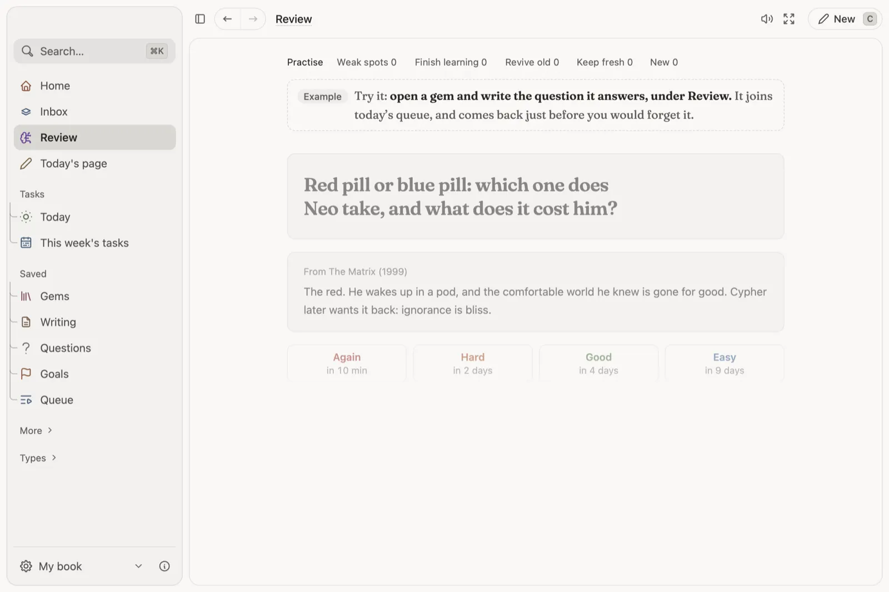
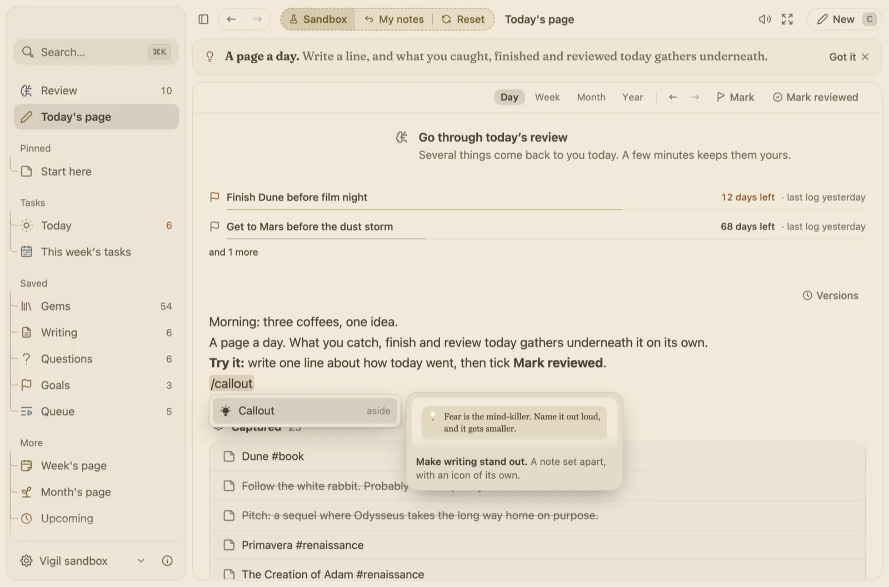
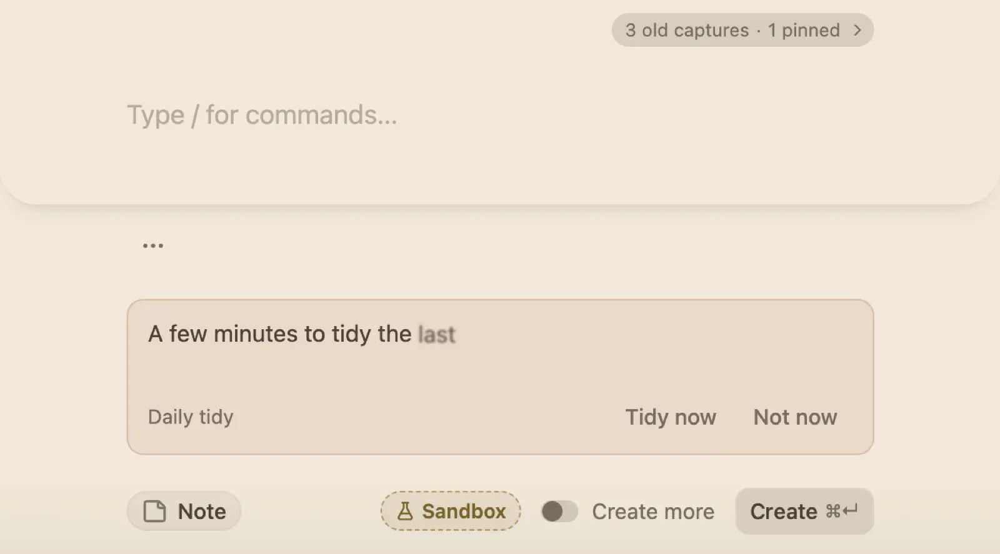
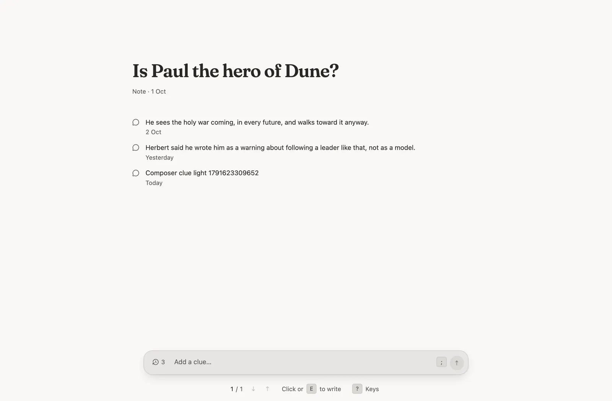
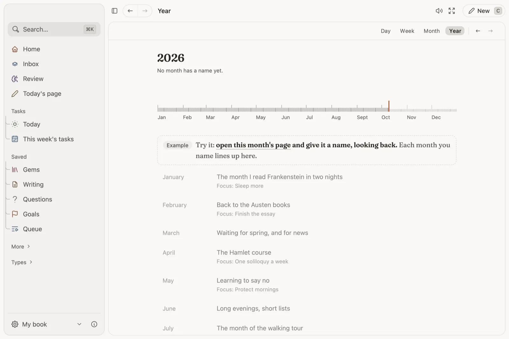

What you keep
comes back.
A commonplace book for the Mac. Notes, books and cards in one place.

A page for every day.
Write on today’s page, then step back to the week and the month in a few lines each.

One key, from any app.
Press ⌘. over whatever you are doing. ⌘↵ puts it away. It waits in your Inbox.

Hold a question open.
Clues gather under it for weeks, until you can answer it.

Your year, in seasons.
Name each month’s season of life, and see the year as the story it was.

You do the thinking.
Haligtree does the remembering and the timing.
It runs on your Mac. Your notes stay on your Mac.